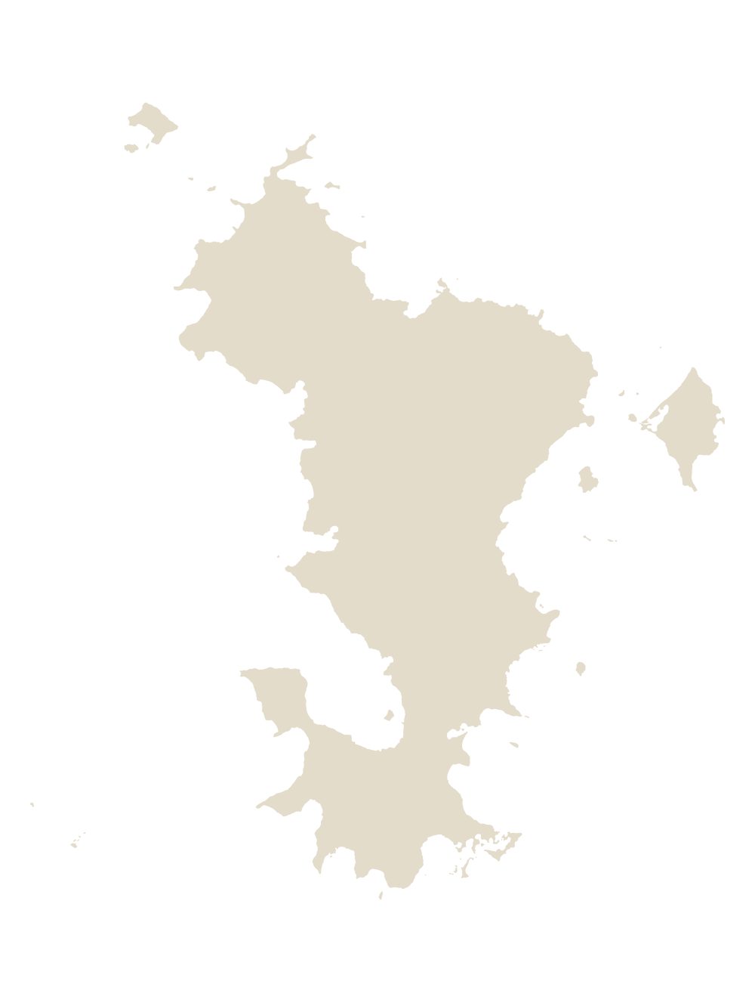
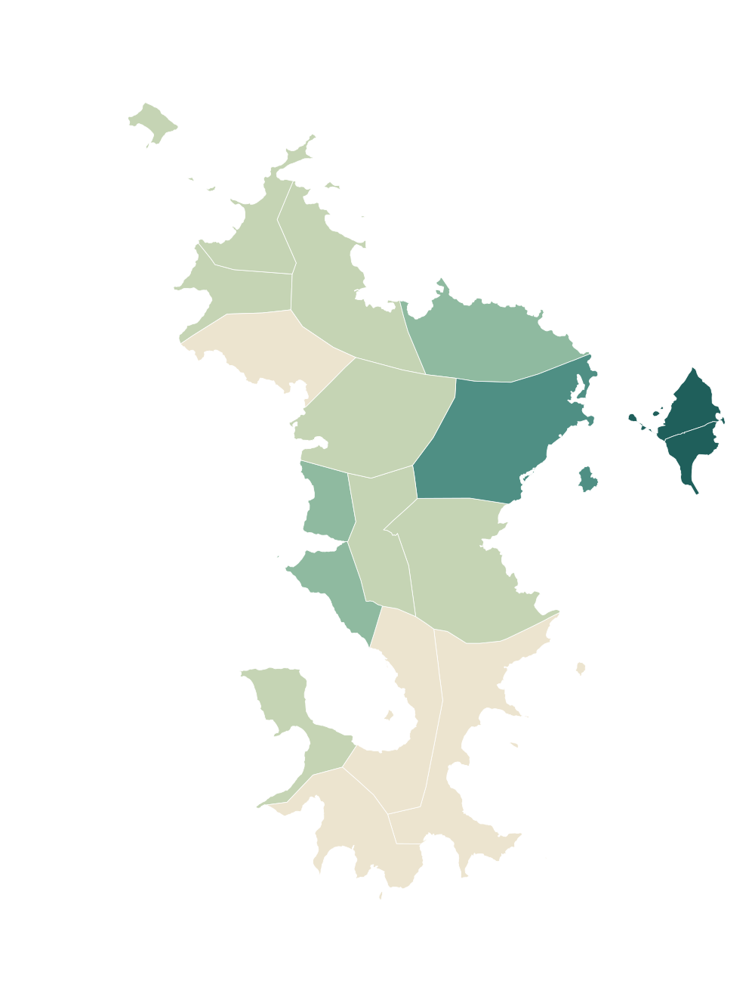
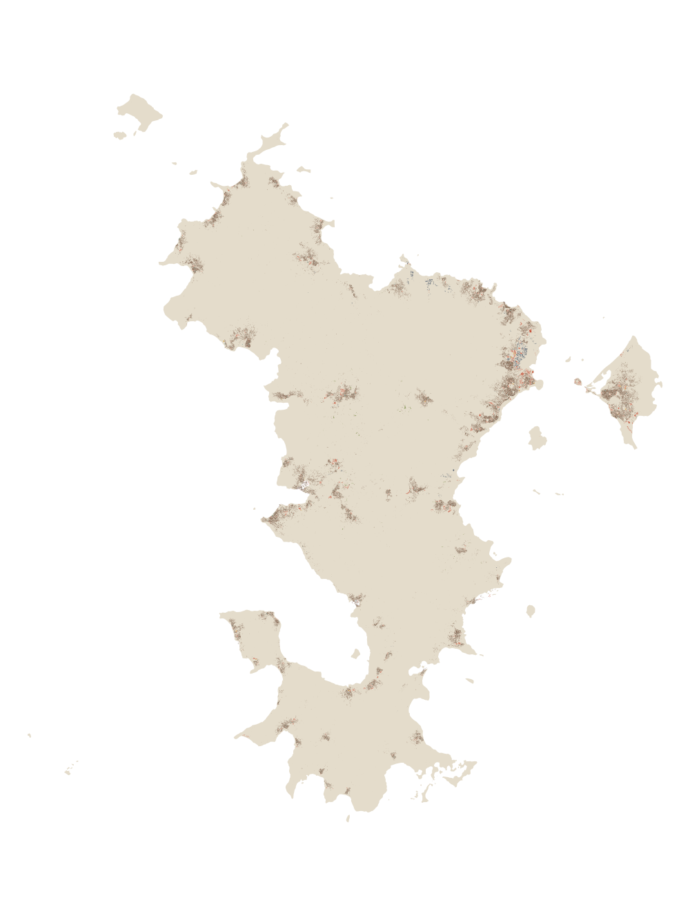

Familles de cartes
-

Silhouettes
La forme de l'île, du tracé détaillé à l'icône, avec ou sans le lagon.
5 cartes -
Découpages administratifs
Communes, cantons, intercommunalités, villages et lieux nommés, avec leurs codes officiels.
5 cartes -

Population et logement
Population, densité et habitat en tôle des 17 communes, au recensement de 2017.
2 cartes -

Cartes physiques
Relief, cours d'eau et mangroves, lagon et récifs, végétation et espaces protégés.
5 cartes -
Réseaux
Routes principales, réseau routier complet et sentiers.
3 cartes -

Bâti et équipements
Les 74 000 bâtiments de l'île par usage, et 935 équipements : écoles, santé, services publics, ports, aéroport.
2 cartes -

Cartes de situation
Mayotte dans l'archipel des Comores et dans le canal du Mozambique.
2 cartes